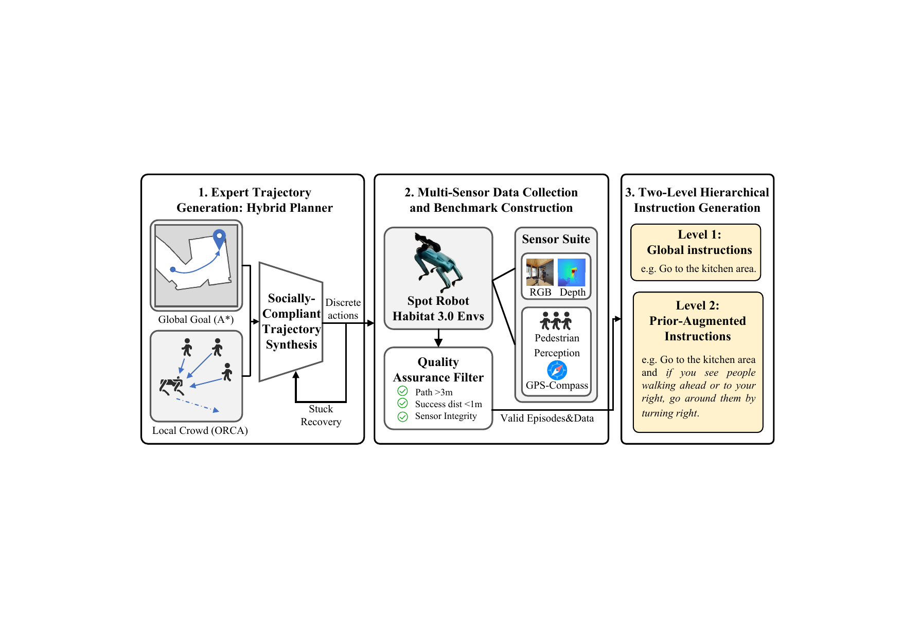
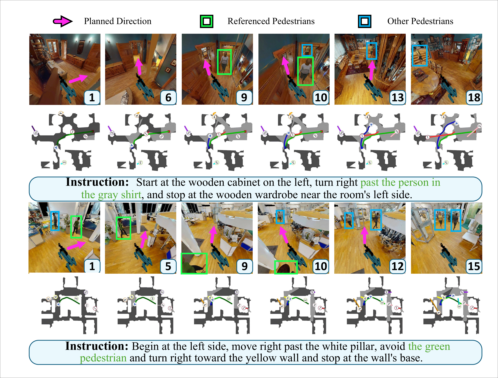

LEVEL 1
Global route guidance
Destination and route descriptions grounded in static scene context.
Goal · route · landmarksDPed-VLN is a benchmark for vision-and-language navigation in dynamic pedestrian environments, pairing route guidance with pedestrian-aware priors and evaluating progress together with social safety.
Each navigation episode is paired with route guidance and a prior-augmented instruction that adds dynamic-pedestrian cues. The protocol makes behavior comparable while keeping safety visible.
Destination and route descriptions grounded in static scene context.
Goal · route · landmarksRoute guidance augmented with concise descriptions of motion, risk, and crowd context.
Motion · risk · densityDPed-VLN combines egocentric RGB-D observations, language, start-relative progress, and pedestrian-aware auxiliary objectives in one reference policy.
Fuse visual observations and instruction embeddings with a recurrent state model.
Predict count, current relative position, and four future path positions.
Report goal completion together with collision and personal-space compliance.
 Reference framework
Reference frameworkSwitch the metric to explore how navigation success, efficiency, time, and safety trade off across the reported reference configurations.
The benchmark connects language, perception, and motion in the same simulated episode.


mean pedestrians per scene
Use the paper, supplementary material, and project repository to reproduce the protocol and extend dynamic-pedestrian VLN.